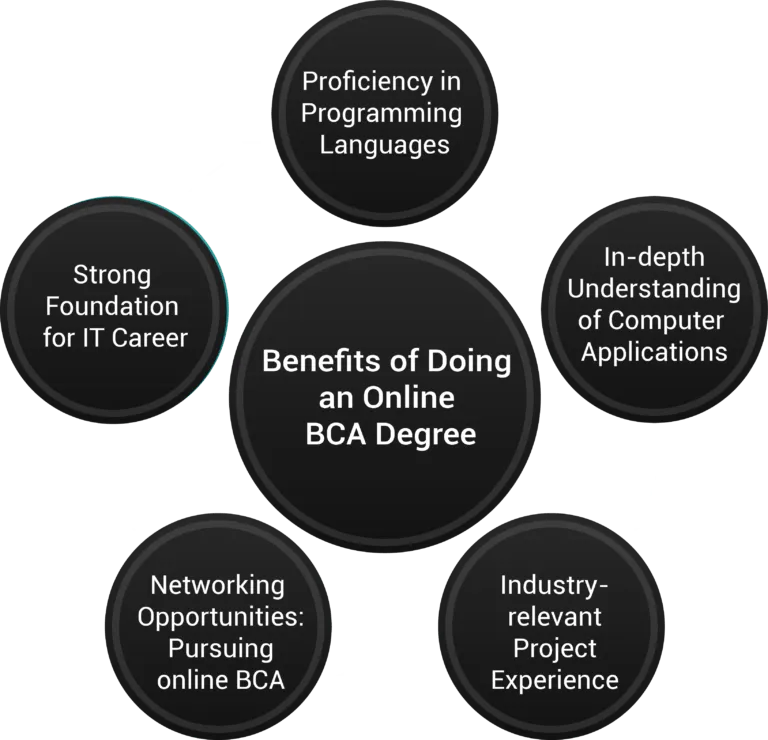

Global Opportunities After Pursuing Online BCA
The BCA (Bachelor of Computer Application) program is a three-year undergraduate course designed to provide students with essential computing skills and knowledge in software development. In this era of technological advancements and digitalization, online BCA programs have become increasingly popular among young students due to the diverse job opportunities they offer across various sectors.
If you are uncertain about your career path after pursuing online BCA, this comprehensive discussion aims to assist you in making informed decisions by exploring the various career choices available.
Benefits of Doing an Online BCA Degree

The best online BCA degree provides an excellent introduction to working with IT tools and technologies. It provides a thorough understanding of both theoretical concepts, such as data structures and algorithms, and practical skills, including competitive programming and application development. Students can go more deeply into their particular areas of interest within computer applications by pursuing an online BCA degree. It offers a chance to learn by doing and investigating different areas of the IT sector.
After graduating from high school, pursuing an online BCA degree has several advantages.
-
Proficiency in Programming Languages: Students in the best online BCA degree become familiar with popular programming languages like C++, Java, and Python. Mastery of these languages provides a strong foundation for understanding new programming concepts and facilitates learning additional languages in the future.
-
In-depth Understanding of Computer Applications: In online BCA coursework, students will cover important topics including data structures, databases, algorithms, discrete mathematics, and operating systems. Due to this vast understanding, students are equipped with the knowledge necessary for implementation in the real world.
-
Industry-relevant Project Experience: Online BCA programs often involve working on industry projects across various domains. Students gain practical experience in networking, database management, and app development. Working alongside industry professionals and experts further enhances their practical skills and prepares them for real-world IT scenarios.
-
Networking Opportunities: Pursuing online BCA degree allows students to network with professionals and experts in the IT field. Interacting with industry practitioners provides valuable insights, mentorship, and potential career opportunities.
-
Strong Foundation for IT Career: BCA serves as a solid foundation for a career in the IT industry. The program offers a comprehensive curriculum and hands-on learning experiences that prepare students for success in diverse IT roles and industries.
How to Decide a Career Path After Online BCA?
Building a successful career after pursuing online BCA courses often requires further qualifications and specialization. Online BCA graduates have various opportunities to improve their skill sets and employment possibilities. Some of the options are a Master’s degree in Business Administration (MBA), Computer Application (MCA), Computer Management (MCM), Information Management, Information Security Management, or Data Science.
Moreover, online BCA graduates can draw advantage from short-term courses such as Network Security, Digital Marketing, Coding and Cyber Security. These certifications can help diversify professional abilities and expertise, ensuring job security and opening up new opportunities.
Numerous high-scope career paths are available for online BCA graduates, and the choice should be based on personal preferences and ambitions. Assessing individual goals and aspirations is crucial to determine the most suitable advanced qualifications and certifications to pursue long-term career growth and success.
Job Opportunities After Completing Online BCA
Online BCA graduates’ opportunities in India and abroad are vast and diverse. Upon completing online BCA, individuals become eligible for numerous entry-level jobs in the IT sector. Alternatively, one can opt for higher studies and pursue an MCA degree, further expanding the scope of career prospects. The best online BCA degree is an effective enabler, positioning graduates for a promising career in terms of job opportunities. On average, online BCA graduates can expect a starting salary of around 3.5 LPA (lakh per annum).
Here are some industries where online BCA graduates can explore job opportunities:
-
Tech consultancies
-
Bank and investment firms
-
Financial institutions
-
Government institutions
-
Software development companies
-
Security companies
-
Network management companies
-
BPOs
-
Website development agencies
-
Game designing firms
-
Graphic design agencies
The diverse and sharp skills acquired while pursuing online BCA journey offer a bright scope for graduates. In addition to working in the industries mentioned earlier, online BCA graduates can explore freelance opportunities or develop their applications or software.
The demand for online BCA graduates extends beyond India and is equally present abroad. Most MNCs such as Oracle, Infosys, IBM, and others target fresh BCA graduates with proper technical skills through recruitment drives. Moreover, government organizations like the National Informatics Centre (NIC) and the Indian Air Force, Navy, and Army also recruit computer professionals for their respective IT departments.
Here are some job roles that online BCA graduates can expect after completing their course:
Web Developer: One of the well-suited job roles for online BCA graduates is working as a website technician responsible for creating and maintaining websites. In this role, graduates can apply their JavaScript, HTML, and PHP knowledge to develop and enhance various web projects. The job involves utilizing technical skills to ensure websites are functional, visually appealing, and optimized for performance. Online BCA graduates can leverage their expertise in web development to excel in this job role.
Software/Application Developer: Software and application development is a sought-after job role across companies of varying sizes and industries. Software developers play a crucial role in creating, implementing, and maintaining desktop or mobile applications using a range of programming languages and tools like Java, PHP, C++, and more. They are involved in every stage of the software lifecycle – from initial concept and development to deployment and ongoing maintenance. Their expertise is key in building efficient and functional applications that meet both business requirements and user needs.
Software Tester: A software tester’s job description includes designing and implementing software test methods to ensure the software functions as intended. Testers play a critical role in ensuring the quality and reliability of software. They evaluate its functionality, identify any flaws or issues, and suggest improvements. Through thorough testing and incorporating user feedback, they help maintain the overall excellence of the product.
Network Administrator: Network administrators are crucial for keeping organizational networks running smoothly. They manage different communication systems like LAN, MAN, WAN, intranets, and network segments. As these systems are critical to the organization, network administrators need specialized knowledge in networking and network engineering concepts. Their responsibilities include overseeing network infrastructure, configuring and troubleshooting network devices, ensuring network security, and optimizing performance. To excel in this role, a strong grasp of networking concepts is essential.
Web Designer: Web designers are responsible for designing and maintaining websites using coding languages. They focus on creating visually appealing and user-friendly websites by integrating text, graphics, sounds, and videos. Their role includes improving the overall user experience and ensuring the effectiveness of the website, whether it’s a new creation or an existing one. Web design is a dynamic field that requires adaptation to evolving user needs and industry trends.
Computer Programmer: Writing, altering, and testing code that directly affects how computer software or applications perform is the responsibility of a computer programmer. Working closely with software developers, they transform design specifications into precise instructions that computers can execute. Due to their competence in coding languages and problem-solving talents, computer programmers are critical to developing and maintaining software solutions. This ensures that the software works effectively and achieves the required goals.
System Analyst: A system analyst is responsible for designing new computer systems and frameworks, addressing technical issues, devising risk mitigation strategies, and ensuring consistent system performance. System analysts play a crucial role in bridging the gap between an organization’s IT and managerial departments. They align technology solutions with business objectives by analyzing system requirements, identifying areas for improvement, and collaborating with relevant stakeholders. Their contribution ensures the efficient functioning and integration of computer systems within the organization.
System Engineer: A system engineer is accountable for managing a system’s engineering, business, and managerial aspects. System engineers play a crucial role in ensuring effective operations and troubleshooting system issues. Their responsibilities include identifying and resolving system issues, designing new systems, and upgrading hardware components when needed. They focus on optimizing system performance and functionality to ensure smooth operations.
Wrapping Up
The IT industry continues to be a major source of employment for online BCA graduates, and this trend is projected to continue in the future. The best online BCA degrees provide a strong foundation in key computer science areas, including databases, data structures, programming languages, operating systems, networking, and software engineering. This comprehensive focus makes online BCA graduates highly sought after across various industries and sectors. Online BCA is the best option for students who are willing to work hard and are dedicated to achieving their career goals.
To find out more about the best online BCA degrees and the top colleges offering these programs, visit the website of the Center for Distance Education Courses.